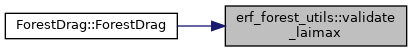

- Generated by
 1.9.1
1.9.1
|
ERF
Energy Research and Forecasting: An Atmospheric Modeling Code
|
Functions | |
| std::string | validate_cartesian_coordinates (bool has_x, bool has_y, bool has_lon, bool has_lat, const std::string &source) |
| std::string | validate_laimax (const amrex::Real laimax, const std::string &source) |
|
inline |
|
inline |
Return an actionable diagnostic for an invalid type-2 canopy LAI maximum. The caller supplies the source description so file-backed and input-backed errors can identify where the bad value came from without aborting here.
Referenced by ForestDrag::ForestDrag().
